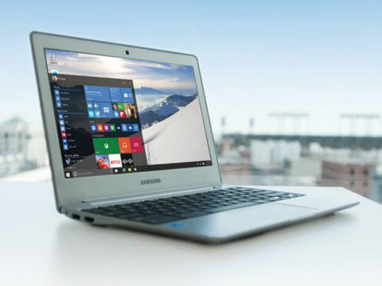

Quarto
GEEK
Início
Contato
Doações
GESHOP
Compre na nossa Loja
GEEK!!
Sobre
Saiba Mais
Informática
Navegue Online
Notícias e Curiosidades, tudo sobre Informática
Realidade Virtual
Headset VR Lenovo Explorer chega ao Brasil por R$2.500
Escrito por: C. Magno
Publicado em 22/10/2017
Segundo o site PcWorld, a Lenovo anunciou nesta semana o lançamento do seu novo headset de Realidade Virtual (VR) desenvolvido com a tecnologia Windows Mixed Reality e compatível com novos recursos do recém-liberado Fall Creators Update do Windows 10.
Disponível na cor cinza chumbo, e terá preço sugerido de R$ 2.500 no Brasil, onde poderá ser comprado na loja on-line da própria Lenovo e em redes varejistas parceiras.
fonte:
PcWorld
Windows 10
Como baixar o Windows 10 Fall Creators Update?
Escrito por: C. Magno
Publicado em 22/10/2017

Antes de forçar o download, verifique se o Fall Creators Update já não está mesmo disponível para você.
Para isso, abra o menu Iniciar e vá em Settings > Updates & Security > Windows Update.
O status no topo da tela vai informar se o seu aparelho está atualizado, e quando o status foi checado pela última vez.
Clique no botão Check for Updates na parte de baixo e veja se ele oferece o Fall Creators Update.
Caso não aconteça, você pode forçar a instalação usando a página Download Windows 10, da Microsoft, que vem permitindo updates sob demanda desde os primeiros dias do Windows 10.
Apenas clique no botão Update Now. O Upgrade Assistant, do Windows 10, vai escanear o seu PC e iniciar o processo de upgrade para a build 16299 do Windows 10, também conhecida como Fall Creators Update.
Lembrando, mais uma vez: não deixe de fazer um backup completo do seu PC antes de fazer isso! O botão Update Now realiza um processo de atualização parecido com o que você receberia caso a Microsoft tivesse enviado o upgrade para você. É algo bastante simples e direto.
fonte:
G1